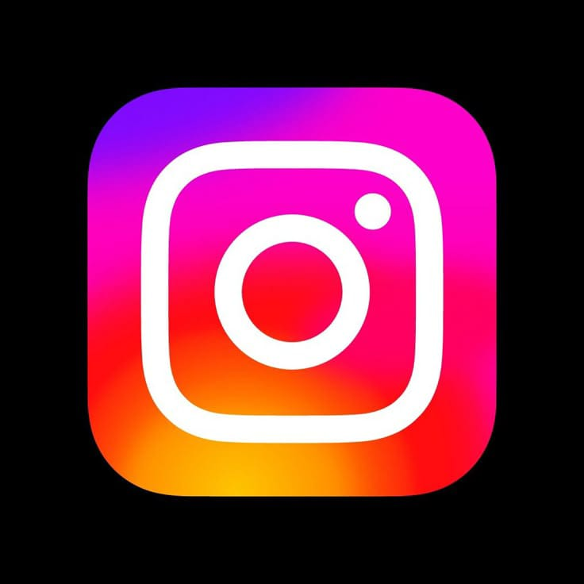

Ngobrol + spam stiker + voice note drama = daily ritual 🫢🎧
Thread
Tempat nulis isi hati jam 2 pagi dengan gaya sok dewasa 🌙

Instagram
Tempat ngintip aesthetic feed, reels gemoy, dan story drama 💅📸
Telegram
Buat nonton bareng, kirim file gede, dan pakai bot lucu 💌
Spotify
Lagu mellow buat nemenin hujan, tugas, dan overthinking ☔🎶